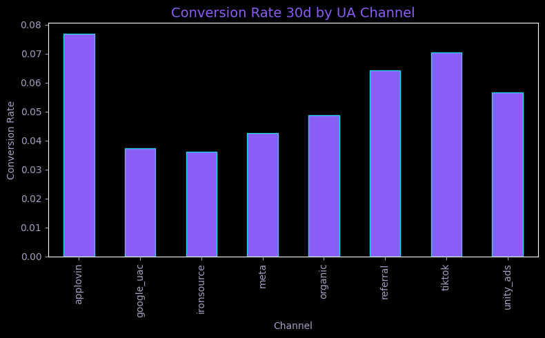
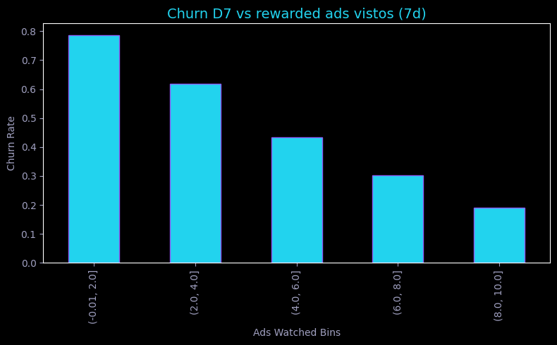
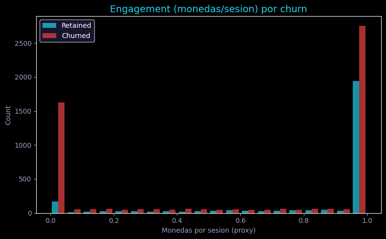

Predecimos qué jugadores dejarán tu juego en 7 días —con motivo y acción— y qué installs se convertirán en pago a 30 días. Para que tu budget de UA deje de quemarse.
| Jugador | Riesgo 7d | Motivo | Acción |
|---|---|---|---|
| p92831 | 78% | Tutorial incompleto | Push onboarding + bonus |
| p10422 | 71% | Sin círculo social | Invitar amigos + recompensa |
| p55201 | 44% | Sesiones cortas | Evento diario + booster |
| p77340 | 9% | — | — |
La retención D1 mediana en móvil es del 22% (GameAnalytics 2026). El resto del budget de adquisición se evapora en silencio.
En nuestro dataset demo calibrado, 2 de cada 3 jugadores dejan de jugar en la primera semana. Sin alerta previa: simplemente no vuelven.
Con CPI medio de $5 y 10.000 installs/mes, ~6.700 se pierden. Son ~$33.500/mes en adquisición sin retorno.
Firebase y Crashlytics describen el pasado. Nadie te dice esta semana a quién retener, por qué motivo y con qué acción.
Dataset sintético reproducible (seed 42): 8.000 jugadores · 3.000 leads · ~53.000 sesiones · ~800 compras. Cada parámetro tiene benchmark externo.
| Métrica | Valor demo | Benchmark |
|---|---|---|
| Churn a 7 días | 67,0% | D7 retention ~4% mediana móvil · GameAnalytics 2026 |
| Conversión a pago (30d) | 5,4% | ~2–5% F2P mid-core · Sensor Tower 2026 |
| Tutorial completado | 38,5% | ~40% casual · GameAnalytics |
| ARPDAU referencia | $0.12 | AppMagic 2026 |
| CPI puzzle | $3–8 | AppsFlyer 2026 |
TikTok trae volumen barato pero retiene peor que orgánico y referral. El budget debe moverse a calidad, no a installs.

Orgánico y referral convierten mejor que paid social.

El engagement temprano (ads, sesiones) separa retenidos de churners.

Los retenidos concentran más monedas por sesión desde la semana 1.
Probabilidad de abandono a 7 días por jugador, con motivo y acción de retención. Ranking semanal Top-100 para Live-Ops.
Importancias: sesiones 0.36 · monedas 0.24 · ads 0.12 · boosters 0.07 · nivel 0.06 · tutorial 0.04 · canal 0.03. Ninguna feature domina: el modelo combina señales.
Probabilidad de que un install se convierta en pago a 30 días (threshold 0.40 sintonizado por F1). Para pujar y presupuestar por calidad.
Clase minoritaria (5,4%): el PR-AUC manda, no el ROC. Con threshold 0.40 capturamos el 76% de futuros pagadores asumiendo falsos positivos baratos (un push) frente a un pagador perdido (caro).
days_since_last_session excluido del modelo — sería decir "predigo que se fue porque se fue". Verificable en src/train.py..pkl. Interpretable para PMs; suficiente para 8k×10 tabulares.Ajusta el perfil de un jugador y mira riesgo, motivo y acción. Demo ilustrativa calibrada con el modelo — no es el modelo productivo.
¿Cuánto vale subir la retención 5 puntos? Introduce tu CPI y tu budget mensual.
Export diario de eventos (CSV o endpoint): sesiones, tutorial, compras, atribución. Nada de SDK invasivo el día 1. Firma DPA + anonimización de IDs.
Grupo tratado (Top-riesgo + acción personalizada) vs. control. Métrica primaria: retención D7. Secundarias: tutorial completion, D30 pago.
Informe con lift, IC 95% y € recuperados. Si no hay lift significativo, no se factura la fase 2. Precio piloto: 2.500 € fijos.
/score → devuelve {p_churn_7d, motivo, acción} por jugador. Latencia < 200 ms p95..pkl con encoders incluidos. Re-entreno semanal con tus datos.Foco: retención 7d + conversión 30d para F2P. Cliente piloto: PlayNova Games.
Esquema SQLite en data/schema.sql + diagrama ER. Anti-leakage desde el diseño.
src/generate_data.py (seed 42): churn por logit con solape real, canal propagado a features, conversión ~5%.
notebooks/01_eda.py reproducible: orgánico 42% vs. paid ~30% retención; tutorial y social como palancas.
src/train.py: RF 300 árboles, threshold sintonizado en conversión, métricas en models/metrics.json.
Porque antes había fuga: el nº de sesiones determinaba la etiqueta. Ahora el churn se genera por logit (tutorial, social, canal, ruido) y las sesiones son consecuencia ruidosa. Recall 0.878 con precision 0.888 es un modelo real, no una tautología. La matriz es [[409,119],[131,941]]: falla en ambos sentidos, como en producción.
8k×10 tabulares no necesitan redes. El RF es interpretable (tu PM ve el porqué), rápido (<200 ms), y auditable. Cuando tengas secuencias de eventos a escala, migramos a gradient boosting / temporal.
No: es una demo ilustrativa calibrada con las importancias del RF. El modelo real está en models/churn_model.pkl con sus encoders. En el piloto exponemos el endpoint /score de verdad.
Probable y aceptable: lo que vendemos es lift en A/B, no un ROC de laboratorio. El go/no-go del piloto es retención D7 incremental con IC 95%, no una métrica offline.
Un CSV diario anonimizado durante 4 semanas y un owner de Live-Ops para lanzar las acciones del playbook. Nada más.